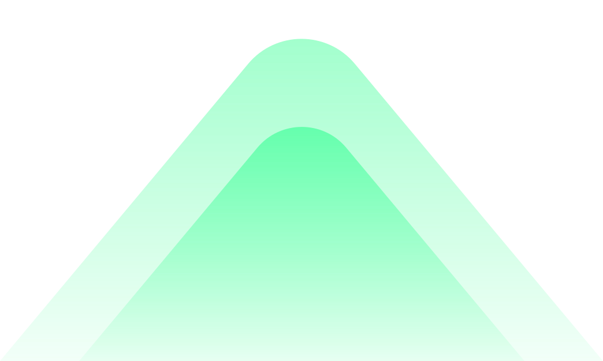

From
CURVE Mainnet
To
Binance Smart Chain
CURVE Mainnet
Balance: 0.0
To
Binance Smart Chain
Wrapped CURVE from EC...
Balance: 0.0
0.0
![MetaMask]()
![WalletConnect]()